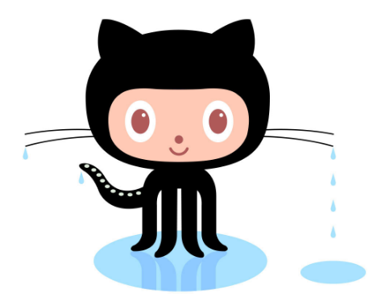

Git/Github Terms:
- Repository: A repository contains all of your code, your files, and each file's revision history. You can discuss and manage your work within the repository.
- Commit: Similar to saving a file that's been edited, a commit records changes to one or more files in your branch.
- Fork: A fork is a new repository that shares code and visibility settings with the original “upstream” repository.
- Push: The push protection feature of secret scanning proactively protects you against leaked secrets in your repositories. You can resolve blocked pushes and, once the detected secret is removed, you can push changes to your working branch from the command line or the web UI.
- Pull Requests: Pull requests let you tell others about changes you've pushed to a branch in a repository on GitHub.
- Workflows: A workflow is a configurable automated process that will run one or more jobs. Workflows are defined by a YAML file checked in to your repository and will run when triggered by an event in your repository, or they can be triggered manually, or at a defined schedule.
- Issues: Issues let you track your work on GitHub, where development happens.
- Raw Button: The Raw button, like the name suggests, opens the file in a raw form, meaning that any HTML formatting disappears.
- Blame Button: The blame command is used to examine the contents of a file line by line and see when each line was last modified and who the author of the modifications was.

|